ЛР1. Работа с сокетами
Студент: Лукошников Дмитрий
Группа: К3342
Цель работы
Понять принципы межсокетного взаимодействия в вебе. Научиться реализовывать базовую архитектуру клиент-сервер.
Краткая теория
| Протокол | Тип сокета | Установка соединения | Гарантии доставки |
|---|---|---|---|
| UDP | SOCK_DGRAM |
нет | нет |
| TCP | SOCK_STREAM |
да (connect/accept) |
да, порядок сохраняется |
| HTTP | поверх TCP | да | да |
UDP — протокол без установления соединения: отправитель просто посылает датаграмму, не дожидаясь подтверждения. Быстрее TCP, но не гарантирует доставку и порядок пакетов.
TCP — требует установления соединения перед обменом данными и гарантирует доставку и порядок байт.
HTTP — прикладной протокол поверх TCP: обычный текст строгого формата (статус-строка, заголовки, пустая строка, тело).
Задание 1. Обмен сообщениями по UDP
Клиент отправляет серверу Hello, server, сервер печатает его и отвечает Hello, client, клиент печатает ответ.
Код сервера (Server_UDP.py)
import socket
server_socket = socket.socket(socket.AF_INET, socket.SOCK_DGRAM)
server_socket.bind(('localhost', 8080))
data, adr = server_socket.recvfrom(1024)
print(data.decode())
server_socket.sendto(b'Hello, client', adr)
server_socket.close()
Код клиента (Client_UDP.py)
import socket
client_socket = socket.socket(socket.AF_INET, socket.SOCK_DGRAM)
client_socket.sendto(b'Hello, server', ('localhost', 8080))
data, adr = client_socket.recvfrom(1024)
print(data.decode())
client_socket.close()
Пример работы
Сервер
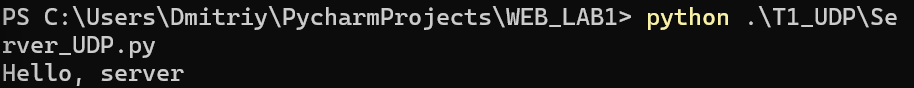
Клиент
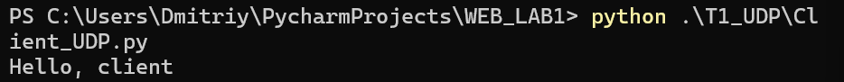
Задание 2. Вычисления через TCP (теорема Пифагора)
Вариант 1 — теорема Пифагора. Клиент вводит катеты с клавиатуры, сервер считает гипотенузу c = √(a² + b²) и возвращает результат.
Код сервера (Server_TCP.py)
import math
import socket
host = 'localhost'
port = 8081
def pifagor(k1, k2):
return math.sqrt(k1**2 + k2**2)
server_socket = socket.socket(socket.AF_INET, socket.SOCK_STREAM)
server_socket.bind((host, port))
server_socket.listen(1)
print(f"Сервер запущен на порту {port}...")
while True:
client_connection, client_address = server_socket.accept()
print(f'Подключение от {client_address}')
request = client_connection.recv(1024).decode()
print(f"Получено сообщение от клиента {client_address} - {request}")
k1, k2 = map(float, request.split(','))
response = f"Гипотенуза = {str(pifagor(k1, k2))}"
client_connection.sendall(response.encode())
print(f"Ответ отправлен клиенту {client_address} - {response}")
client_connection.close()
Код клиента (Client_TCP.py)
import socket
host = 'localhost'
port = 8081
client_socket = socket.socket(socket.AF_INET, socket.SOCK_STREAM)
client_socket.connect((host, port))
print("Это клиент-серверная часть приложения для счёта гипотенузы по теореме Пифагора")
while True:
try:
k1 = float(input("Введите длину первого катета: "))
k2 = float(input("Введите длину второго катета: "))
except ValueError:
print("Катеты должны быть в формате float")
print("Попробуй еще раз")
continue
request = f"{k1},{k2}"
break
client_socket.sendall(request.encode())
response = client_socket.recv(1024)
print(f'Ответ от сервера: {response.decode()}')
client_socket.close()
Пример работы
Сервер
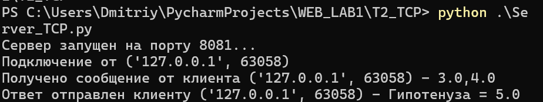
Клиент
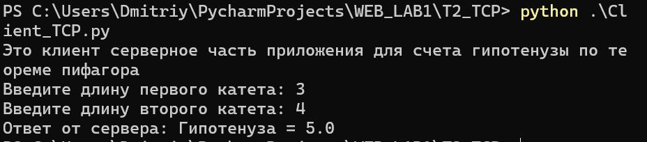
Задание 3. Раздача HTML-страницы по HTTP
Сервер по сокету отдаёт корректный HTTP-ответ с телом из файла index.html. Content-Length считается в байтах.
Код сервера (Server_HTTP.py)
import socket
HOST = 'localhost'
PORT = 8082
server_socket = socket.socket(socket.AF_INET, socket.SOCK_STREAM)
server_socket.bind((HOST, PORT))
server_socket.listen(5)
print(f"HTTP сервер запущен на {HOST}:{PORT}...")
with open('index.html', 'r', encoding='utf-8') as f:
html_content = f.read()
html_bytes = html_content.encode('utf-8')
print(f"Ссылка для подключения - http://localhost:8082/")
while True:
connection, address = server_socket.accept()
print(f'Подключение от {address}')
request = connection.recv(1024).decode('utf-8', errors='ignore')
print(f'Запрос клиента:\n{request}')
header = (
"HTTP/1.1 200 OK\r\n"
"Content-Type: text/html; charset=UTF-8\r\n"
f"Content-Length: {len(html_bytes)}\r\n"
"Connection: close\r\n"
"\r\n"
)
http_response = header.encode('utf-8') + html_bytes
connection.sendall(http_response)
connection.close()
Файл index.html
<!DOCTYPE html>
<html lang="en">
<head>
<meta charset="UTF-8">
<title>Это сервер на питоне</title>
</head>
<body>
<h1>Всем привет, я сделал это, ура!</h1>
<p>Сервер отправил этот html файл как HTTP ответ клиенту</p>
<em>Лукошников Дмитрий, 466549, К3342</em>
<h2>Получилось очень круто!</h2>
</body>
</html>
Пример работы
Сервер
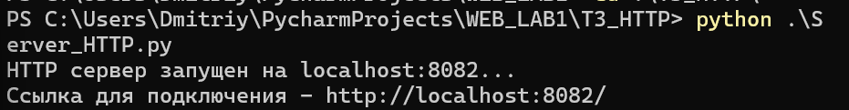
Страница
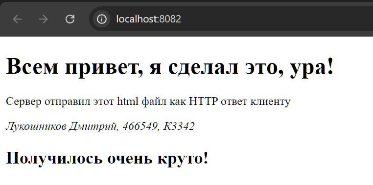
Задание 4. Многопользовательский чат
Многопользовательский чат на TCP: один клиентский скрипт, который несколько пользователей запускают в разных терминалах. Сервер держит список подключений и рассылает сообщения всем в чате.
Код сервера (Server_Chat.py)
import socket
import threading
host = 'localhost'
port = 8083
clients = {}
def sendMessage(message, sender_connection):
for connection in list(clients):
if connection is sender_connection:
continue
try:
connection.sendall(message.encode())
except OSError:
remove_client(connection)
def remove_client(connection):
name = clients.pop(connection, None)
if name is None:
return
print(f"[{name} отключился]")
sendMessage(f"[{name} отключился]\n", connection)
try:
connection.close()
except OSError:
pass
def handle_client(connection, address):
try:
connection.sendall("Введите имя: ".encode())
name = connection.recv(1024).decode().strip()
clients[connection] = name
print(f"[{name} подключился]")
sendMessage(f"[{name} подключился]\n", connection)
connection.sendall(
f"{name}, добро пожаловать! Напишите \\exit для выхода. Пишите сообщение в пустой строке и оно будет видно в чате\n".encode()
)
while True:
data = connection.recv(1024)
if not data:
break
message = data.decode().strip()
if not message:
continue
if message == r"\exit":
break
print(f"[{name} - {message}]")
sendMessage(f"[{name}]: {message}\n", connection)
except OSError:
pass
finally:
remove_client(connection)
server = socket.socket(socket.AF_INET, socket.SOCK_STREAM)
server.setsockopt(socket.SOL_SOCKET, socket.SO_REUSEADDR, 1)
server.bind((host, port))
server.listen()
print(f"[Сервер запущен на порту - {port}]")
while True:
connection, address = server.accept()
threading.Thread(target=handle_client, args=(connection, address), daemon=True).start()
Код клиента (Client_Chat.py)
import socket
import sys
import threading
host = 'localhost'
port = 8083
def receive_messages(sock):
while True:
try:
data = sock.recv(1024)
if not data:
print("Сервер закрыл соединение.")
break
print(data.decode(), end='')
except OSError:
break
sock.close()
sys.exit(0)
client_socket = socket.socket(socket.AF_INET, socket.SOCK_STREAM)
client_socket.connect((host, port))
print(client_socket.recv(1024).decode(), end='')
name = input()
try:
client_socket.sendall(name.encode())
except OSError:
print("Сервер вылетел, попробуйте позже")
sys.exit(0)
threading.Thread(target=receive_messages, args=(client_socket,), daemon=True).start()
while True:
message = input()
if not message:
continue
try:
client_socket.sendall(message.encode())
except OSError:
print("Сервер вылетел, попробуйте позже")
sys.exit(0)
if message == r"\exit":
print("Вы вышли из чата")
client_socket.close()
sys.exit(0)
print(f"Вы[{name}] отправили сообщение в чат - {message}")
Пример работы
Сервер
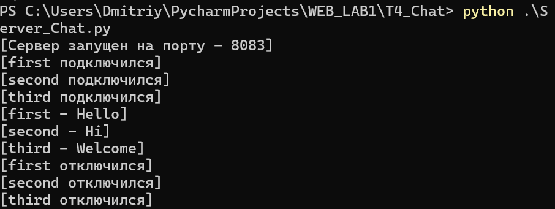
Клиент 1
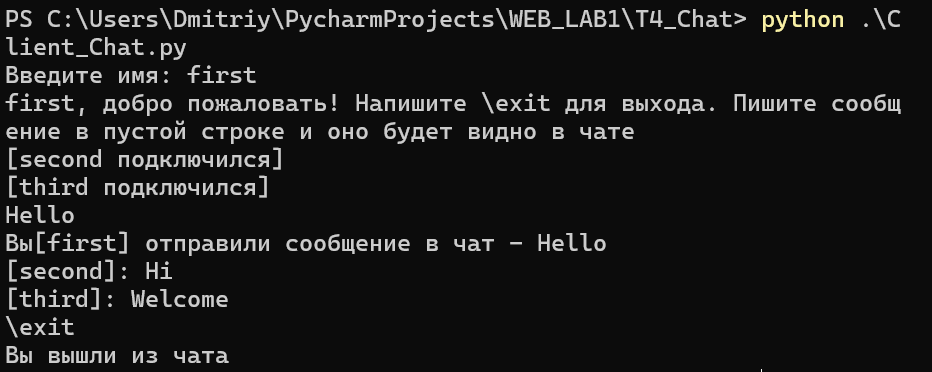
Клиент 2
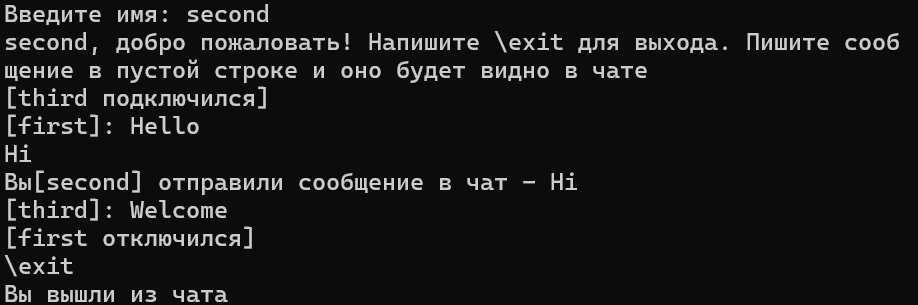
Клиент 3
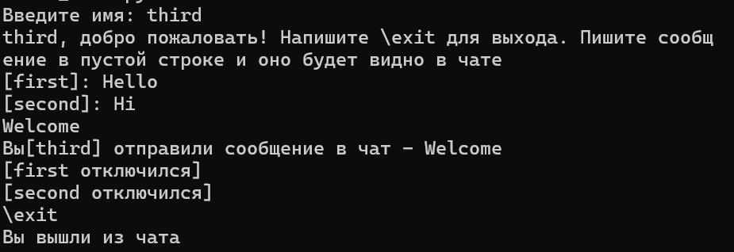
Задание 5. Простой веб-сервер (GET/POST)
Веб-сервер на сокете, который разбирает HTTP-запрос вручную:
- POST — принимает дисциплину и оценку, сохраняет в журнал;
- GET — отдаёт HTML-страницу со всеми оценками.
Журнал группируется по предмету: {предмет: [оценки]} — одна дисциплина с списком оценок.
Код сервера (ServerWeb.py)
import socket
from urllib.parse import parse_qs
HOST = 'localhost'
PORT = 8084
journal = {}
ALLOWED_GRADES = {"2", "3", "4", "5"}
INDEX_HTML = """<!DOCTYPE html>
<html lang="ru">
<head>
<meta charset="UTF-8">
<title>Журнал оценок</title>
</head>
<body>
<h1>Журнал оценок</h1>
<form method="POST" action="/">
<label>Дисциплина: <input type="text" name="subject" required></label><br>
<label>Оценка: <input type="text" name="grade" required></label><br>
<button type="submit">Добавить</button>
</form>
<h2>Все оценки</h2>
{TABLE}
</body>
</html>
"""
def render_table():
if not journal:
return "<p>Пока нет ни одной оценки.</p>"
rows = ""
for subject, grades in journal.items():
rows += f"<tr><td>{subject}</td><td>{', '.join(grades)}</td></tr>"
return (
"<table border='1' cellpadding='5'>"
"<tr><th>Дисциплина</th><th>Оценки</th></tr>"
+ rows +
"</table>"
)
def send_response(connection, status, body):
body_bytes = body.encode('utf-8')
response = (
f"HTTP/1.1 {status}\r\n"
"Content-Type: text/html; charset=UTF-8\r\n"
f"Content-Length: {len(body_bytes)}\r\n"
"Connection: close\r\n"
"\r\n"
).encode('utf-8') + body_bytes
connection.sendall(response)
server_socket = socket.socket(socket.AF_INET, socket.SOCK_STREAM)
server_socket.setsockopt(socket.SOL_SOCKET, socket.SO_REUSEADDR, 1)
server_socket.bind((HOST, PORT))
server_socket.listen(5)
print(f"HTTP сервер запущен: http://{HOST}:{PORT}/")
while True:
connection, address = server_socket.accept()
print(f"Подключение от {address}")
data = b""
while b"\r\n\r\n" not in data:
chunk = connection.recv(4096)
if not chunk:
break
data += chunk
head, _, body = data.partition(b"\r\n\r\n")
content_length = 0
for line in head.split(b"\r\n"):
if line.lower().startswith(b"content-length:"):
content_length = int(line.split(b":", 1)[1].strip())
break
while len(body) < content_length:
chunk = connection.recv(4096)
if not chunk:
break
body += chunk
request_line = head.split(b"\r\n")[0].decode('utf-8', errors='ignore')
parts = request_line.split()
method = parts[0] if len(parts) > 0 else ""
path = parts[1] if len(parts) > 1 else "/"
print(f"{method} {path}")
if method == "POST":
params = parse_qs(body.decode('utf-8', errors='ignore'))
subject = params.get("subject", [""])[0].strip()
grade = params.get("grade", [""])[0].strip()
if subject and grade in ALLOWED_GRADES:
journal.setdefault(subject, []).append(grade)
redirect = (
"HTTP/1.1 303 See Other\r\n"
"Location: /\r\n"
"Content-Length: 0\r\n"
"Connection: close\r\n"
"\r\n"
).encode('utf-8')
connection.sendall(redirect)
elif method == "GET":
html = INDEX_HTML.replace("{TABLE}", render_table())
send_response(connection, "200 OK", html)
else:
send_response(connection, "405 Method Not Allowed", "<h1>405</h1>")
connection.close()
Пример работы
Пустой журнал
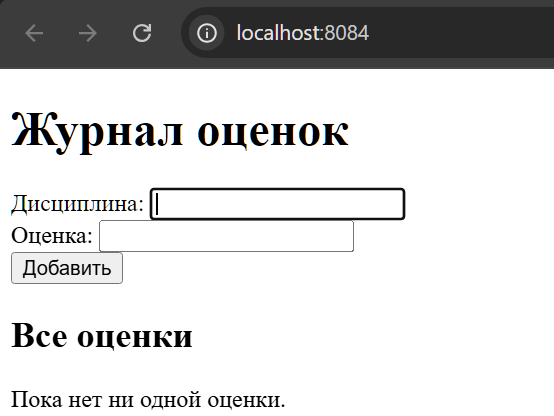
Заполненный журнал
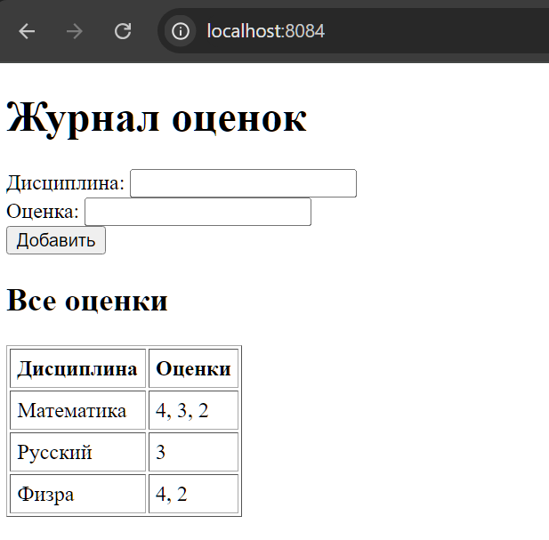
Вывод
В ходе работы были реализованы клиент-серверные приложения на сокетах:
- UDP-обмен — базовый обмен датаграммами без установки соединения.
- TCP-вычисления — передача параметров и результата с гарантией доставки.
- HTTP-раздача — формирование корректного HTTP-ответа вручную.
- Многопользовательский чат — TCP + threading, идентификация пользователей, рассылка сообщений.
- Веб-сервер GET/POST — разбор HTTP-запроса, хранение журнала с группировкой по дисциплине.
Все приложения используют библиотеку socket; для чата дополнительно задействована threading.